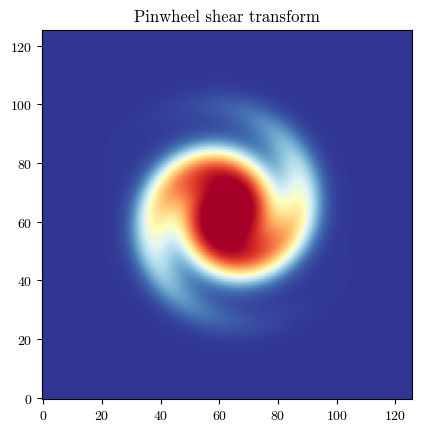

[ ]:
import batsim
import galsim
import matplotlib.pyplot as plt
plt.rcParams['font.family'] = 'serif'
plt.rcParams['font.serif'] = ['cmr10']
plt.rcParams['mathtext.fontset'] ='cm'
plt.rcParams['figure.facecolor'] = 'white'
plt.rc('axes', unicode_minus=False)
plt.rc('axes.formatter', use_mathtext=True)
Currently, BATSim only provides two types of non-affine transform, however, the renderer has intentionally been designed to allow users to define and provide their own transforms.
Any user defined transforms should inherit from the base class batsim.Transform. This base class handles backend, data type and centering management. The user defined class should provide a _transform_relative() method which accepts a (2, n) array of image coordinates and returns the inverse transform of these coordinates.
This is because BATSim uses a backward mapping for its renderer. Given coordinates \(x\) on the regular output-image grid, transform(x) returns coordinates \(u\) at which the source surface-brightness profile should be evaluated:
For a locally affine transformation with forward geometric matrix \(\textbf{M}\), a source feature at \(u\) appears at
The corresponding BATSim coordinate transform must therefore return
Although the inverse matrix is used to sample the source profile, visible features undergo the forward transformation. For example, a source feature at \(u_0\) appears where
which implies
This backward, or pull-based, convention evaluates the source profile once for every output location and avoids the gaps and overlaps that can occur when source samples are pushed forwards onto an output grid.
Custom Transform Example: Pinwheel Transform
In order to illustrate how users should define custom transforms, we are going to define a non-affine transform class which will turn a centred, circular source into a pinwheel with radially dependent rotation of its isophotes.
[2]:
# As mentioned previously, a transform object is provided in the form of a Python class
class PinwheelTransform(batsim.Transform): # inherit backend methods from base class
"""
Apply a rotating, radius-dependent shear to produce twisted isophotes.
Parameters
----------
radius : float
Characteristic radius at which the shear reaches ``g_max``.
g_max : float, optional
Maximum reduced-shear amplitude. Must satisfy ``0 <= g_max < 1``.
turns : float, optional
Number of half-turns made by the shear position angle over one
characteristic radius. For example, ``turns=0.5`` rotates the
orientation by 90 degrees between ``r=0`` and ``r=radius``.
phi0 : float, optional
Shear position angle at the centre, in radians.
**kwargs
Arguments forwarded to :class:`batsim.BaseTransform`.
"""
# Inititalise with fixed transform parameters
def __init__(
self,
radius,
g_max=0.35,
turns=0.5,
phi0=0.0,
**kwargs,
):
super().__init__(**kwargs)
if radius <= 0:
raise ValueError("radius must be positive.")
if not 0 <= g_max < 1:
raise ValueError("g_max must satisfy 0 <= g_max < 1.")
self.radius = radius
self.g_max = g_max
self.turns = turns
self.phi0 = phi0
# This is the heart of the transform object, which computes the
# INVERSE mapped coordinates to be sampled onto the image grid
# by BATSim. It should accept an array of coordinates, a backend,
# and a datatype
def _transform_relative(self, coords, xp, dtype):
x_output, y_output = coords
# Technically a backend and datatype does not need to be passed,
# but if the backend and dtype are hard coded, the same backend
# and dtype MUST be specified in simulate_galaxy()
radius = xp.asarray(self.radius, dtype=dtype)
g_max = xp.asarray(self.g_max, dtype=dtype)
turns = xp.asarray(self.turns, dtype=dtype)
phi0 = xp.asarray(self.phi0, dtype=dtype)
r = xp.sqrt(x_output**2 + y_output**2)
radial_ratio = r / radius
# Smoothly increase from zero at the centre, reach g_max at
# r=radius, and decay again at large radius.
g_abs = (
g_max
* radial_ratio
* xp.exp(1.0 - radial_ratio)
)
# Rotate the local shear position angle with radius.
phi = phi0 + turns * xp.pi * radial_ratio
g1 = g_abs * xp.cos(2.0 * phi)
g2 = g_abs * xp.sin(2.0 * phi)
# Backward mapping through the inverse local shear matrix.
inv_norm = xp.sqrt(1.0 - g1**2 - g2**2)
x_prime = (
(1.0 - g1) * x_output - g2 * y_output
) / inv_norm
y_prime = (
-g2 * x_output + (1.0 + g1) * y_output
) / inv_norm
return xp.stack([x_prime, y_prime], axis=0)
[ ]:
# Instantiate a simple galaxy profile and PSF with Galsim
gal = galsim.Gaussian(sigma=1.0)
psf = galsim.Moffat(beta=3.5, fwhm=0.7)
# Instantiate our custom transform object
pinwheel_transform = PinwheelTransform(
radius=2.0,
g_max=0.35,
turns=0.8,
phi0=0.0
)
# Call the BATSim renderer to draw the image
gal_pinwheeled = batsim.simulate_galaxy(
gal_obj=gal,
scale=0.1,
transform_obj=pinwheel_transform, # pass our custom class
psf_obj=psf
)
# Call BATSim plotting utility to get a nicely normalised image
fig = batsim.pltutil.make_plot_image(gal_pinwheeled)
plt.title("Pinwheel shear transform")
plt.savefig("pinwheel_shear_example.pdf", dpi=300)
